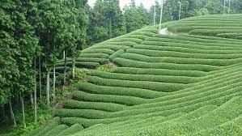
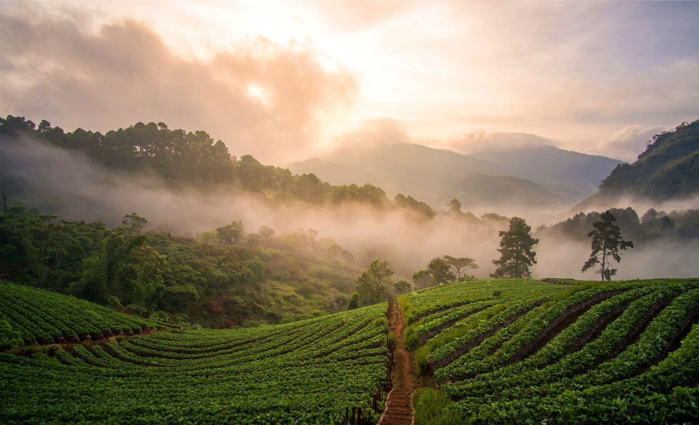
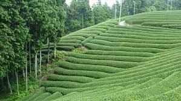
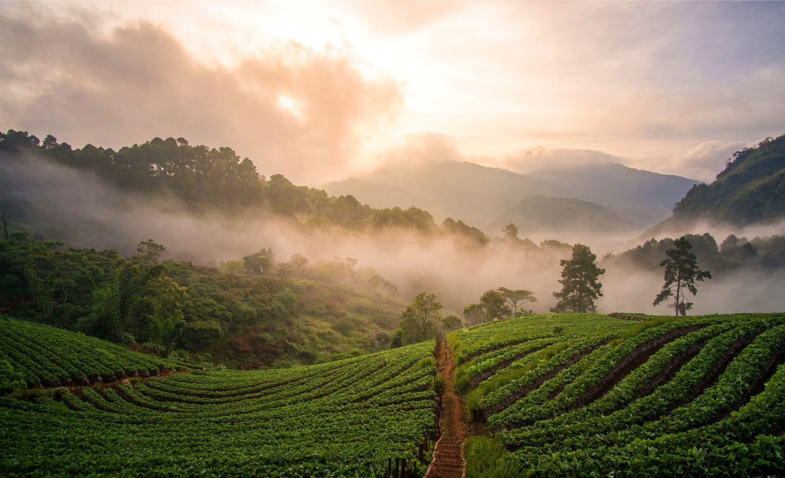

Notre histoire
Aventure de Matcha Tea
L'aventure de Matcha Tea est marquée par des défis et des triomphes, des voyages à travers les plantations de thé verdoyantes, des rencontres avec des artisans passionnés et des découvertes de saveurs exquises. Chaque étape de notre parcours est guidée par un engagement inébranlable envers l'excellence, l'authenticité et le respect de l'environnement. Au fil des ans, Matcha Tea est devenu bien plus qu'une simple entreprise de thé. C'est devenu un mouvement mondial pour le bien-être et la communauté, unissant les amateurs de thé du monde entier autour d'une passion commune pour le matcha. De nos magasins pittoresques aux coins reculés de l'internet, l'aventure de Matcha Tea se poursuit, alimentée par notre amour pour cette boisson exceptionnelle et notre engagement envers un mode de vie sain et équilibré. C'est cette aventure, riche en tradition, en passion et en découverte, qui définit l'essence même de Matcha Tea et inspire chacune de nos actions.
 



À Propos de Matcha Tea
Matcha Tea, nous croyons que chaque personne se doit de goûter au plaisir de cette petite merveille en provenance du Japon. Le thé matcha est considéré comme un superaliment. Cette poudre d’un vert électrique, est riche en bons nutriments et particulièrement en antioxydants et vitamines A, C et E. Nous sommes une entreprise passionnée et spécialisée dans la confection de délicieux thés matcha. Que ce soit le goût naturel du matcha en passant par le matcha goût vanille ou encore celui à la fraise, notre entreprise locale travaille à confectionner sur mesure ses petites merveilles.

Les valeurs de Matcha Tea
Chez Matcha Tea, nous nous engageons à offrir à nos clients le meilleur thé matcha possible. Nous sélectionnons soigneusement les feuilles de thé les plus fines et nous les transformons avec expertise pour garantir une saveur riche et une texture veloutée à chaque tasse. Nous sommes conscients de notre responsabilité envers la planète. C'est pourquoi nous nous efforçons de minimiser notre empreinte écologique à chaque étape de la production, en utilisant des pratiques agricoles durables, en favorisant les emballages recyclables et en soutenant les initiatives de reforestation. Le matcha est une tradition ancienne au Japon, et chez Matcha Tea, nous honorons cet héritage en préservant les méthodes de culture et de transformation traditionnelles. Chaque lot de thé matcha que nous produisons est authentique et respecte les normes de qualité les plus élevées. Engagement envers la santé : Nous croyons au pouvoir revitalisant du thé matcha pour le corps et l'esprit. En tant que fervents défenseurs du bien-être, nous nous engageons à fournir des produits purs et naturels qui soutiennent un mode de vie sain et équilibré. Le thé matcha rassemble les gens autour d'une passion commune pour une boisson délicieuse et nourrissante. Nous encourageons la convivialité et le partage en créant des espaces où nos clients peuvent se réunir, échanger des idées et apprécier ensemble l'expérience du thé matcha. Ces valeurs fondamentales guident toutes nos actions et décisions chez Matcha Tea, et nous sommes fiers de les partager avec nos clients et partenaires à travers le monde.